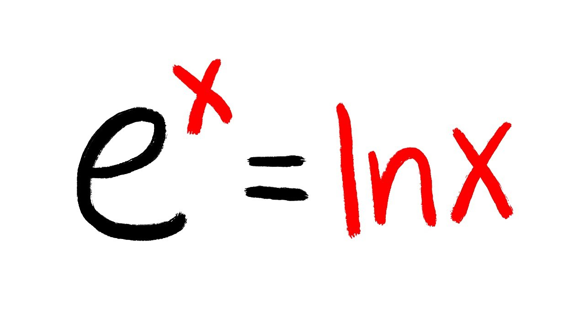
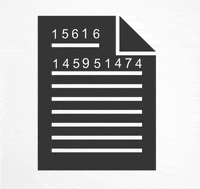
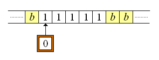

Diego Esparza Jacobo
Desarrollador | Estudiante de Ingeniería en Sistemas Computacionales
Formación Académica
Escuela Secundaria Federal No.1 Jaime Torres Bodet (2015 - 2018)
Instituto de Difusión Tecnica No.1 - Técnico en Informatica (2018 - 2020)
Instituto Politécnico Nacional - Ingeniería en Sistemas Computacionales (2022 - actualidad)
Alura Latam - ONE Oracle Next Generation (2025)
INROADS MÉXICO - Inroader en Desarrollo (2025)
Contacto
Email: esparzadiego5@gmail.com
LinkedIn: https://www.linkedin.com/in/diego-esparza-jacobo/
GitHub: https://github.com/Anaximandrus
Pasatiempos Favoritos
- Programar juegos y herramientas. Me gusta programar juegos y software de diferente indole en C++, actualmente estoy desarrollando un pequeño motor para videojuegos como experimento, para cuando termine espero tener al menos un juego listo para probar.
- Resolver acertijos. Me gusta resolver problemas matemativos o de programación competitiva debido a que me ayudan a aprender y a poner a prueba mis conocimientos. 
-
Jugar videojuegos de estrategia. Aunque me gusta jugar videojuegos de forma general, me gustan particiluarmente los juegos de
estrategia en tiempo real (RTS) como Age of Empires o Age of Mythology.

Hechos Curiosos sobre Criptografía
¿Sabías que la criptografía moderna se basa en problemas matemáticos que son fáciles de verificar pero difíciles de resolver, como la factorización de números primos grandes? Uno de los cifrados más famosos, RSA, se basa precisamente en este principio. 
Durante la Segunda Guerra Mundial, los Aliados rompieron el cifrado de la máquina Enigma, lo que aceleró el fin de la guerra. Esto dio origen a la criptografía computacional moderna y al concepto de la "máquina de Turing". 
A pesar de que lo uno pudiese intuir, la criptografia moderna no esta basada en la idea de ocultar el algoritmo que se utiliza para cifrar los datos, si no en el uso de claves o llaves para acceder a la información, de esta manera los algoritmos pueden ser públicos y auditables sin perder seguridad.
Descargas
Perfil
Soy un desarrollador apasionado por la programación, las matmeaticas y los videojuegos. Soy una persona que se enfoca en crear soluciones a problemas eficaces, eficientes y amigables para el usuario.
Experiencia
Procuraduria Federal del Consumidor - Auxiliar Administrativo Practicante (2019)
Manejo de archivos, mantenimeinto preventivo y correctivo de equipo, atención de quejas y de clientes, revisión, procesado y almacenamiento de archivos, manejo del software de gestión de quejas.
Habilidades
Proyectos
Portfolio Web - Sitio personal con proyectos y blog. Ver proyecto